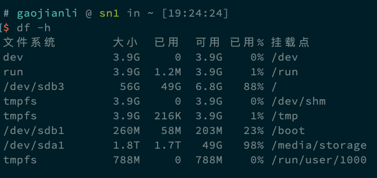
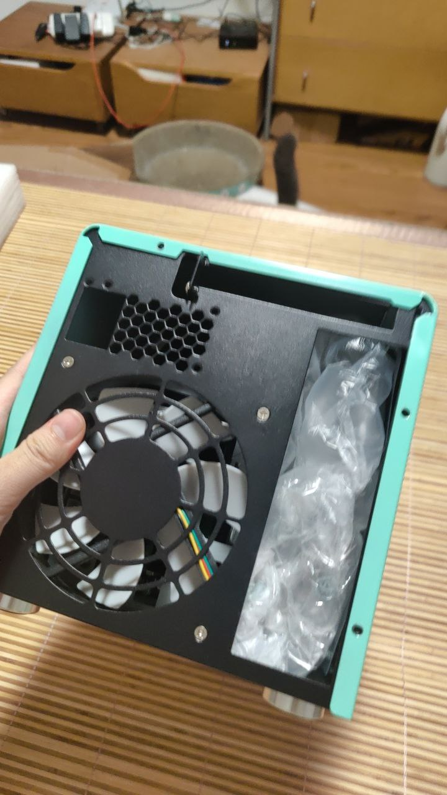
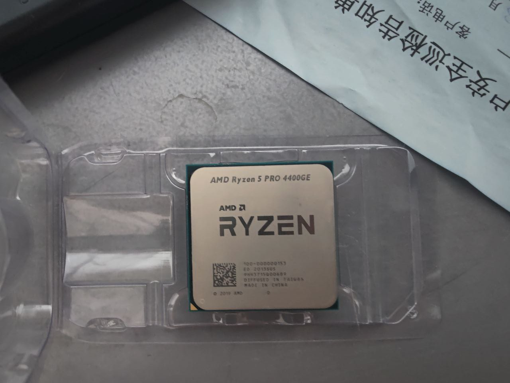
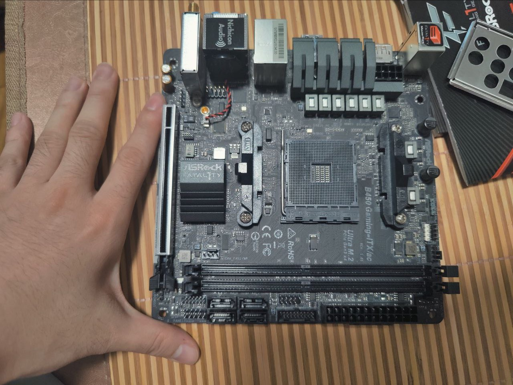
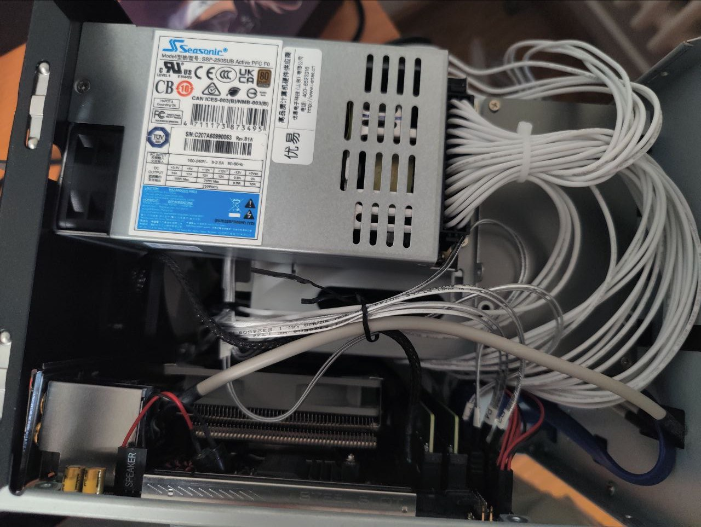
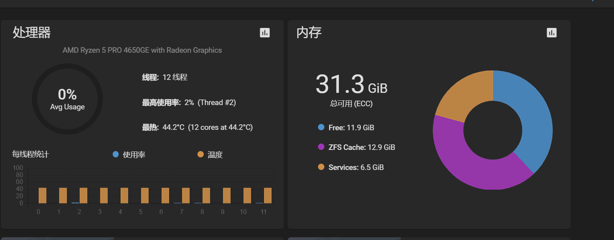
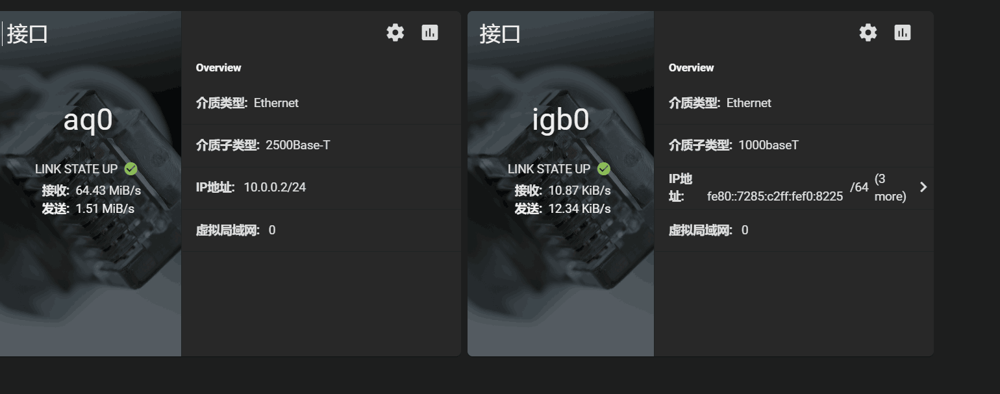
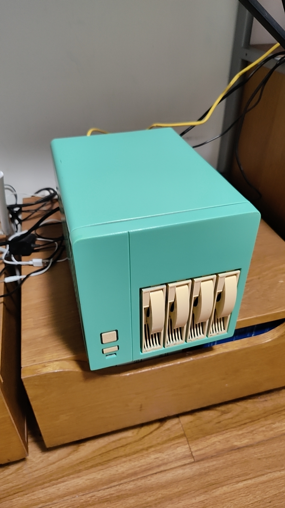
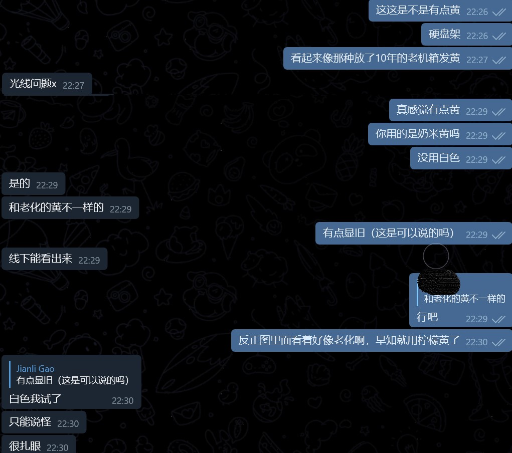

起因
今年 7 月对于老二次元来说，是一个不寻常的夏天。除了酷热的高温之外，还有不断重复着延期——被举报——再延期的循环的漫展。在赛博二次元中，也有一个大事情：B 站今年 7 月购买番剧数量是 0！这标志着持续多年的番剧正版化运动正式回到原点，众多 B 站大会员喜提年度大怨种称号。那么，对于赛博时代的好青年，应该怎么看番呢？
我个人回退到了 RSS+BT 的原始方案。在ACG.RIP上订阅想看的番剧，然后使用 qbittorrent 自动下载，完成之后再使用 tgbot 给我发个消息：
我之前的设备其实是一个赛扬 3867U 的一体机盒子，装了 Archlinux，里面上了一块 2.5 英寸的笔记本硬盘，连 NAS 都算不上。然而就这么小个身躯里面却承载着 FreeRadius、qbittorrent、jellyfin 等多种服务，考虑到单盘的现状和笔记本硬盘的可靠性，实在是有一些灵。但是它工作，而且工作得非常好，十天半个月不关机毫无问题，每次关机都是我主动滚系统导致的。但是随着各种小姐姐，番剧的累积，我的下载盒子空间逐渐变得捉襟见肘：这个问题就很难通过软件进行优化了。这个时候我又恰好好看到了 AZ 的视频，考虑到 Insta 恐怖的素材体积（1 天录满 128G），在仔细地咨询了一下经验之后，遂决定自己也搞一个。
为什么不考虑群晖
一个字，贵！这个价格就配一个赛扬（ARM），真心不值得。
需求
首先列了一下我的需求：
- 体积不能太大，不能超过 MATX
- 需要上 RAID，因此盘位至少需要 4 块
- 我想体验一下 ZFS
- 直接上 NAS 系统，不想折腾从零开始安装软件了
- 我要安装 Jellyfin，因此要能解码 4k
首先关于 3，网上一直有一个说法是 ZFS 必须使用 ECC 内存，否则有可能会丢失所有数据，稍微咨询了一下群友也得到了肯定的结论：，那么就必须把 ECC 纳入考虑之中了。
选择
机箱选择
4 盘位的机箱其实可选项并没有很多，AZ 建议我看看银欣，万由的机箱，或者干脆星际蜗牛。乔思伯 N1 由于太长，直接出局；星际蜗牛虽然符合我的需求，但是太丑，而且据说风扇噪音很大；最后我相中了万由 410，尺寸263*195*197，支持使用 flex 电源，风扇据说也比较安静。走闲鱼 400 块钱拿下来，比较划算。
值得一提的是万由 410 使用了一个巨傻逼的类肤涂层前面板，时间一长就特别黏，堪称吸灰神器。幸好龙哥(Makiras，包院士门徒，未来的中国半导体扛把子)愿意免费帮我改一下颜色，于是我便下单了一大堆喷漆和机箱直接邮给了他。
硬件配置
搞定了机箱，接下来就是其他硬件了。由于要使用 ECC，因此其实选择相当有限。在艰难的两天挑选过程中，我几乎翻遍了全网所有的相关文章，最终确定了两种方案：
Intel
在随意的翻找 Intel Ark 的过程中，我无意中发现 12 代 Intel 全系支持 ECC，尤其是大小核心的设计，对于 NAS 这种负载来说非常合适。粗略地翻找之后，我便看上了i3-12100TE这一 CPU：4 核 8 线程的设计，ECC 内存的支持，35W 的 TDP，UDH730 的核芯显卡都堪称完美。
但是，Intel CPU 对于 ECC 的支持问题从来不是在 CPU 上，而是在主板。民用级别的芯片组，无论是 H610 还是 Z690均不支持 ECC，要想用 ECC？对不起，请去使用 W680 芯片组。对于 NAS 这种尺寸，使用 W680 芯片组的主板不说绝对没有，也不超过 2 块。幸好华擎始终是爱世人的，这种奇葩规格的板子还真让我找到一块。
仔细一看不得不说，这个板子是真的奇葩：首先上哪儿去找 SO-DIMM 的 ECC 内存就是个大坑，其次只有两个 SATA 接口，要想拓展只能使用宝贵的 PCIE 插槽。不过这些都是小问题，真正的致命问题是：买！不！到！
我翻遍了国内外购物网站包括亚马逊都没找到哪里能买到这块主板。不管你的板子多么牛逼，如果是空气板那一切都是零。既然 12 代 Intel 的主板买不到，就只能退而求其次了。Intel 的 i3 系列似乎一直都有那么几个子型号支持 ECC，在一通搜索之后我最终确定了i3-10100T+W470的方案，整体配置单如下：
| 配件名称 | 型号 | 单价 | 数量 | 合计 |
|---|---|---|---|---|
| CPU | i3-10100T | 745 | 1 | 745 |
| 主板 | 超微 X12SCV W480E | 2550 | 1 | 2550 |
| 内存 | 三星 16GB DDR4 2666 SO-DIMM ECC | 450 | 2 | 900 |
| 电源 | 海韵 SSP-250SUB | 355 | 1 | 355 |
| 机箱 | 万由 410（闲鱼） | 450 | 1 | 450 |
| 合计 | 5000 |
我觉得不管怎么说这个配置单也是相当荒谬的，这个主板也太 TM 贵了，这还没算上硬盘的钱就超过 5000 了。这个 CPU 在这个板子上真就吕布骑狗。
AMD
Intel 不成，就只能来看看 AMD 了。首先好消息是 AMD 全系支持 ECC，普通消费级主板也能支持 ECC 内存的使用；坏消息是由于我拥有核显的需求，因此只能考虑 APU，而Ryzen APU 必须是 Pro 版本才支持 ECC。不过这个不是什么大问题，Pro 的 APU 也没有特别昂贵。在挑选的过程中，我很大程度上参考了这篇文章，在这里表示感谢。AMD 方案的整体配置单如下：
| 配件名称 | 型号 | 单价 | 数量 | 合计 |
|---|---|---|---|---|
| CPU | Ryzen R3 Pro 4350G 闲鱼 | 648 | 1 | 648 |
| 主板 | 华擎 B450 gaming-itx 闲鱼 | 568 | 1 | 568 |
| 内存 | 三星 16GB DDR4 ECC | 440 | 2 | 800 |
| 电源 | 海韵 SSP-250SUB | 355 | 1 | 355 |
| 网卡 | TP-Link TL-NT521 | 409 | 1 | 409 |
| 机箱 | 万由 410（闲鱼） | 450 | 1 | 650 |
| 合计 | 3310 |
这个价格就友好许多了，于是最终决定采用这个方案。当然由于实际操作中没有买到4350G，最后 800 块钱收了一个R5 Pro 4400GE，升级到 6 核 12 线程；TDP 还降到了 35W，还算不错。
组装
上周一，龙哥告诉我机箱的涂装已经完成，我下单的其他配件也陆陆续续开始发货。最终周四的时候所有配件到齐了，动手开始！
插曲
然而其实在开始之前就遇到了一个非常傻逼的问题，这个机箱打不开！我卸下四颗螺丝之后不管我怎么操作这个机箱就是纹丝不动，在网上查找了一大堆教程之后终于找到了一个打开的方法：https://b23.tv/3DfWywA (请看 4 分 55 秒)。
组装
总之最后在一通操作之后，虽然成功化身手肿治虫，还是打开了这个机箱。
先来看看 CPU，毫无疑问这个 CPU 肯定是二手的，上面还有一些油渍。不过 CPU 这种东西反正也不会坏，也没人会用这东西来挖矿，应该问题不大。
接下来是主板，其实这是我第一次见到华擎的主板，不得不说体积是真的小。另外这里有个教训，就是购买这种二手主板前一定要叫卖家刷好 BIOS，不然点不亮就悲剧了。
接下来略过一些残酷的 ITX 装机过程，让我们快进到结束吧！

可以看到装好之后还是相当紧凑的。
硬盘
关于 NAS 的硬盘选购，公说公有理，婆说婆有理，我在这里就不多做评价了。不过大家对比故障率之后得出的一致结论是：别买希捷。
其他不管是 HC550 还是 HC530 都是不错的硬盘，但是 HC550 的噪音恶名昭著，在听信一个知乎回答说东芝更加安静之后，我最终选择了 4 块东芝的MG08ACA16TE，容量为 16TB。
关于系统
因为想直接使用一个简单的成品系统，同时又不想使用国产灵车群晖，我便选择了大名鼎鼎的 FreeNAS（现已改名 TrueNAS）。安装系统非常快速，操作界面也十分清晰，三下五除二搞定了 RAIDZ 的配置，再把 NAS 的万兆网口和 PC 连接起来，基本就算大功告成了。
（主板识别有问题，识别成了 4650GE）


TrueNAS Core 不同于其他常见 NAS 系统，其底层基于的是 FreeBSD。幸好 TrueNAS 的 UI 还算完善（才怪），加上我有一些 BSD 的使用经验，因此使用没有遇到特别大的问题。BSD 的 Jail 和 LXC 非常类似，区别只是没有 Dockerfile，需要手动安装而已。不过对于 NAS 这种不需要大规模部署的场景，反而更加适合私人定制。花了 1 个下午搞定了 qbittrorent 和 nginx 的安装，再从老盒子同步完数据，NAS 的安装就差不多搞一段了了。
最终效果图
最后放一个效果图

(关于硬盘提手的问题，真的不是 20 年前的塑料老化了！是龙哥建议的奶米黄，至于旧不旧，龙哥说不旧，是光线问题，那大家就当他是光线问题吧）

では、諸君は。
8 月 22 日 Update：
我错了，我根本不懂 FreeBSD。这傻逼系统，狗都不用，具体请看下一篇文章。